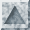
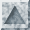
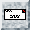
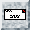

Other Theorem-Proving Links
 Automated Reasoning Database at Stanford.
Automated Reasoning Database at Stanford.
- The TPTP Home Page.
- QED Home page.
- ORA Bibliography of Automated Deduction
- Tomás Uribe's automated deduction page.
- Logical Frameworks Page.
- Formal Methods Library at Oxford.
- The Mizar Home Page.
- Association for Automated Reasoning (AAR)
- Conference on Automated Deduction (CADE)
- Journal of Automated Reasoning (JAR)
Past and Present Members of the TPS Project:
[Peter Andrews]
[Matthew Bishop]
[Chad E. Brown]
[Sunil Issar]
[Dan Nesmith]
[Frank Pfenning]
[Hongwei Xi]
(not by any means an exhaustive list).
 

 
